Coach A — polished R3
16 stills, at most 1200 px wide. Measurements, checks and local motion paths. Four heads per side; collider and seats unchanged.
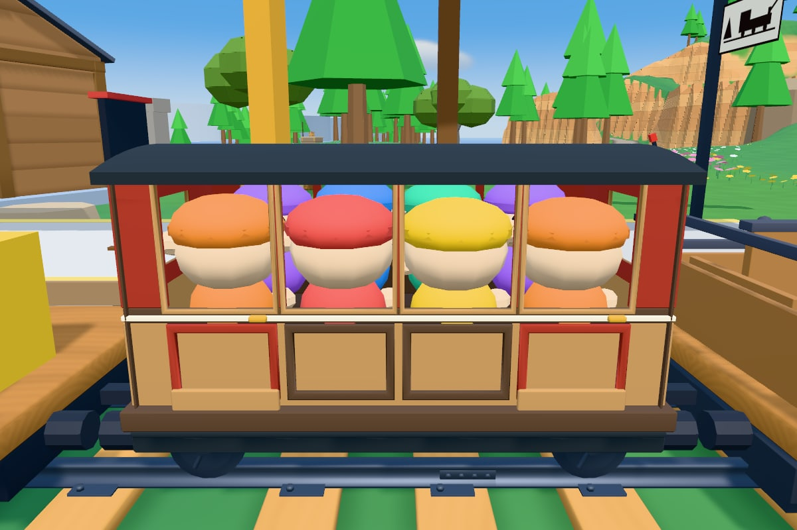
Home, 8 riders, outer side; fixed close camera c1.
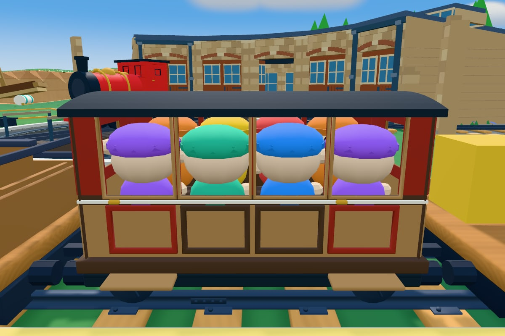
Home, 8 riders, platform side; fixed close camera c3.
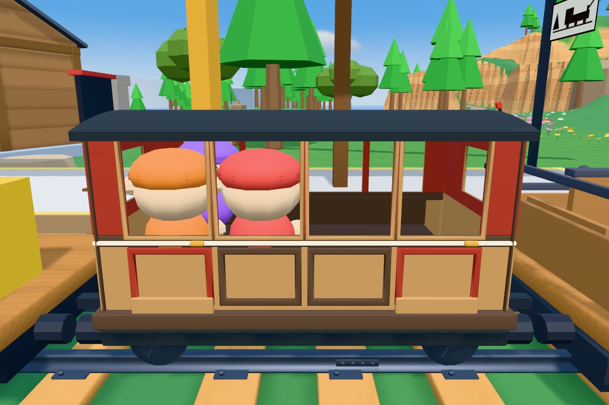
Home, 3 riders, outer side; fixed close camera c1.
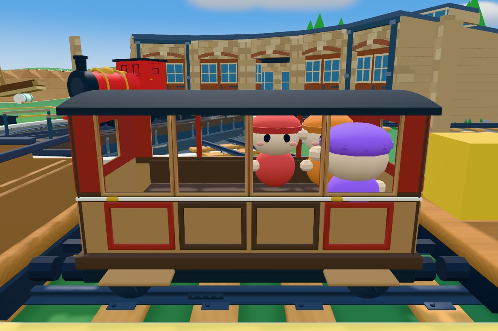
Home, 3 riders, platform side; fixed close camera c3.
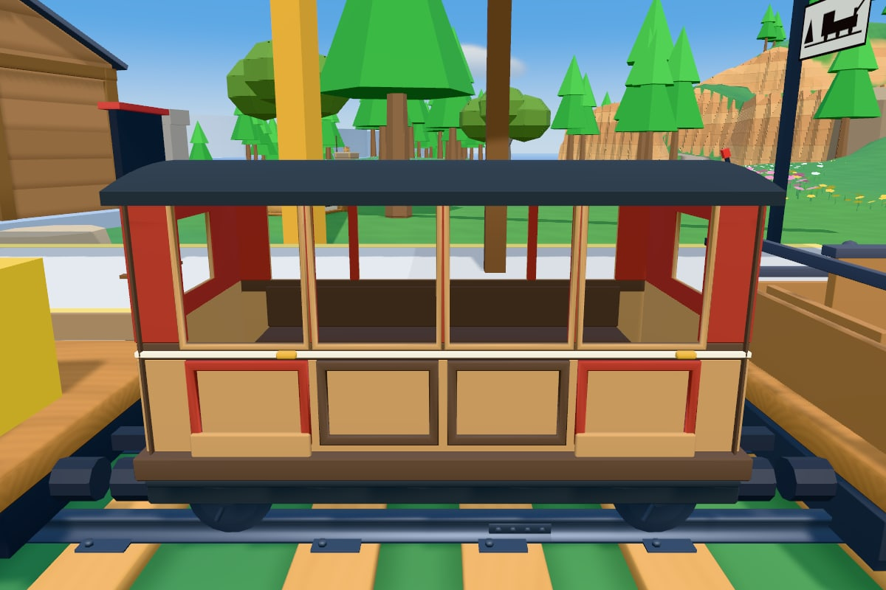
Home, 0 riders, outer side; fixed close camera c1.
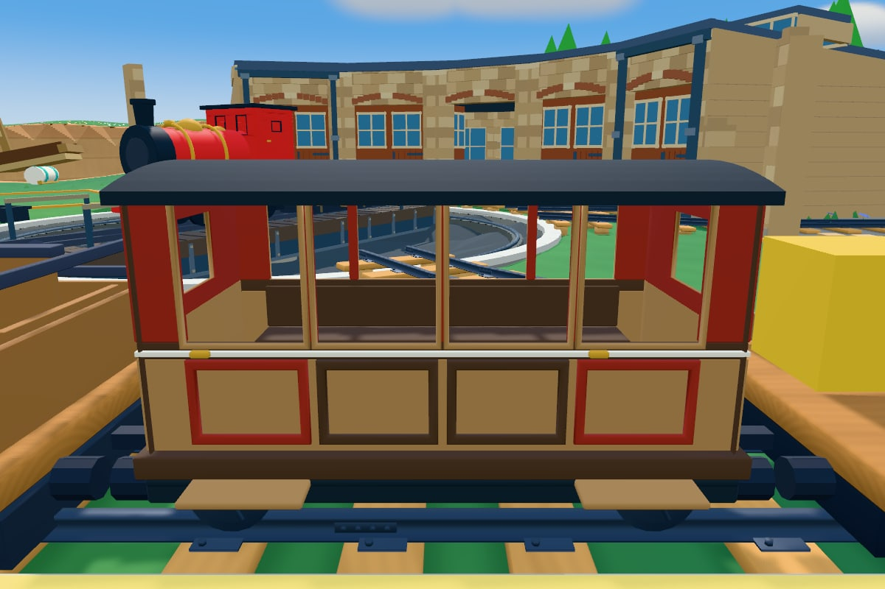
Home, 0 riders, platform side; fixed close camera c3.
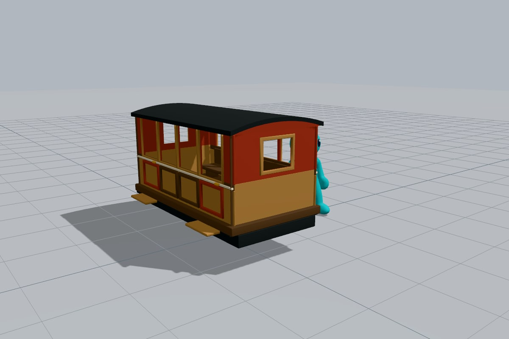
Buddy stage, studio light, side -1; shell kit without train wheel/buffer/coupling batches.
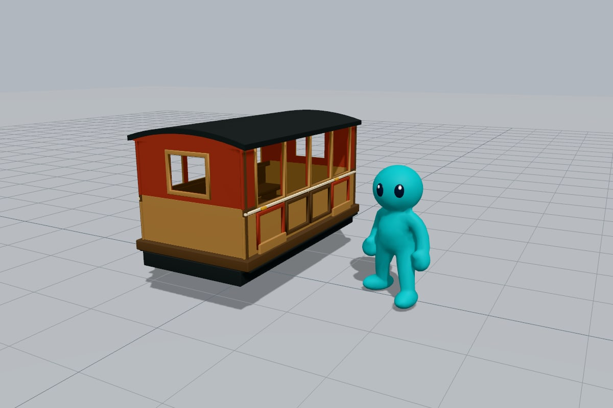
Buddy stage, studio light, side 1; shell kit without train wheel/buffer/coupling batches.
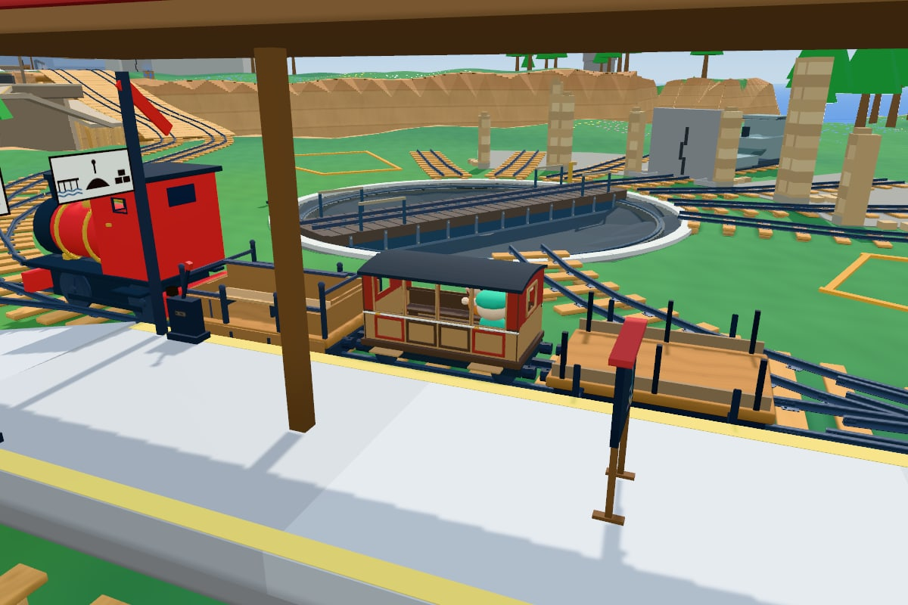
Home platform pair down, real server arrival; three riders after boarding.
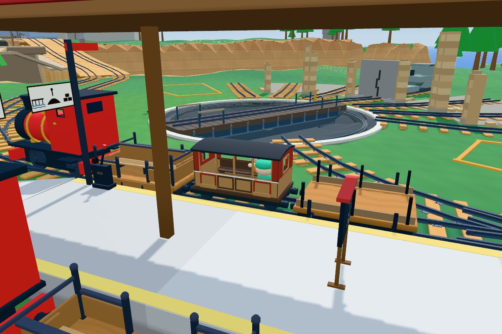
Home departure, captured 0.4 s after departure detection; platform pair folded up.
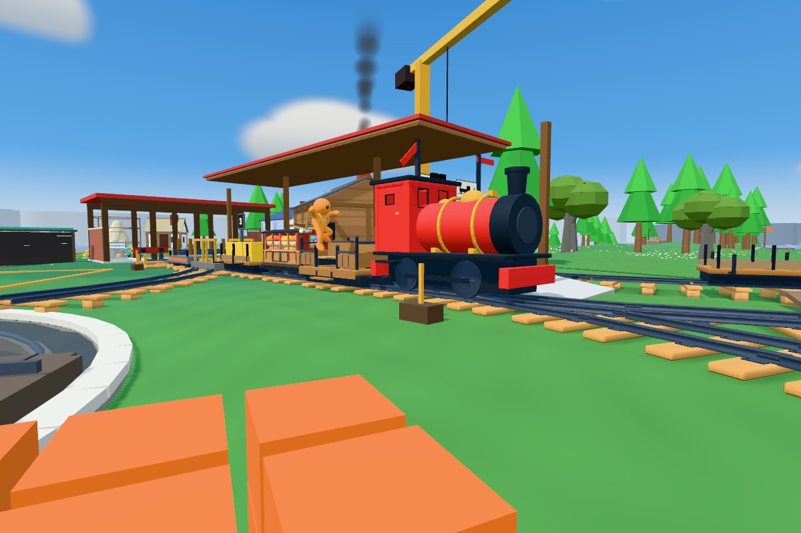
Home from the owner's approved turntable camera; actual train and players' car.
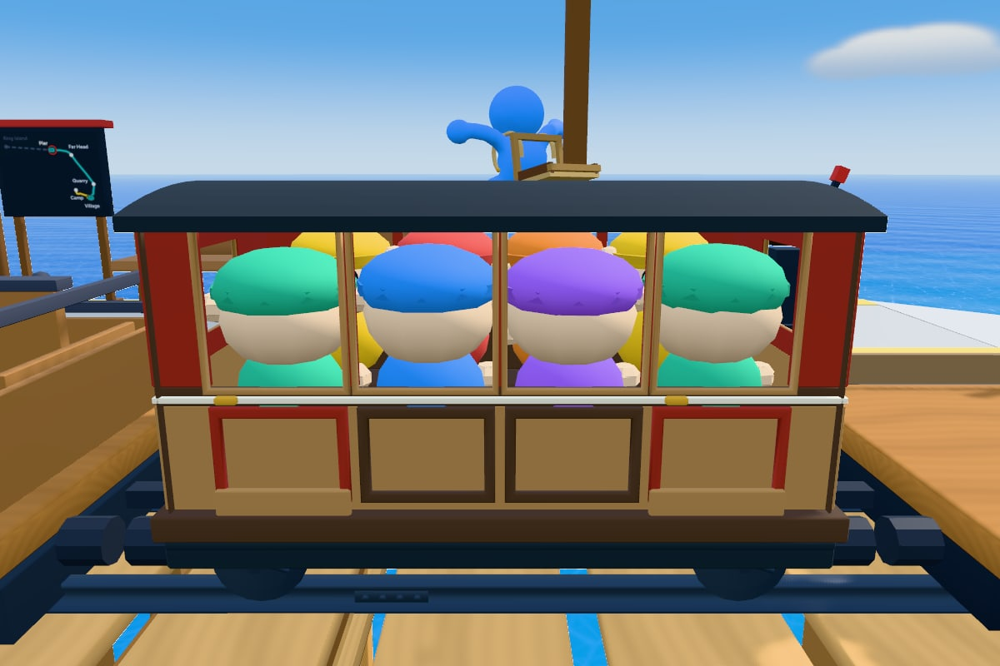
Pier terminal, platform-side close view; eight diagnostic riders on an accepted train.
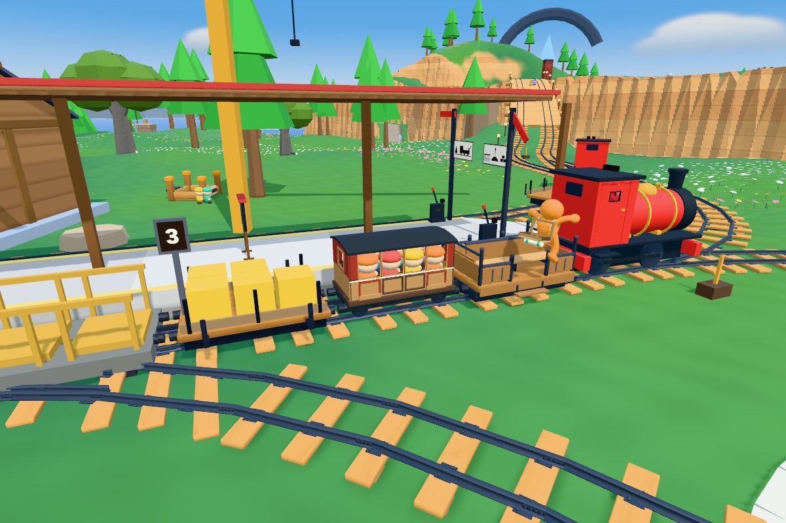
Home at native 1200 × 800 game camera c0; count four near-side heads beside the players’ car.
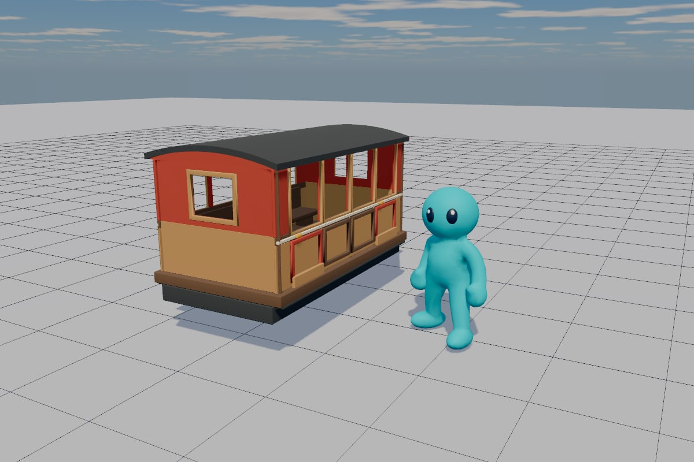
Buddy stage, shipped lighting at exposure 0.16; shadowed material read, no invented Roundhouse route.
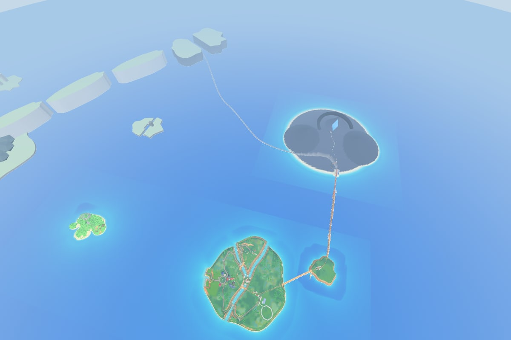
All six active line 2 coaches in the cost-measurement camera; too distant for an art-read test.
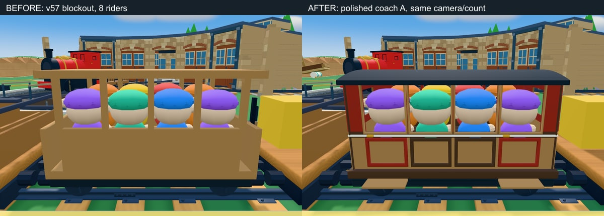
Matched Home platform close camera c3: main v57 blockout / polished coach A. Both eight riders.